Electrical items from North America
Power sockets
Standard 15A outlets
Rating: 15A 125V
These are two standard NEMA 5-15R power outlets, as found in the majority of houses in North America. Of course, the general layout and shape of the sockets is entirely different from the Italian and European ones I'm used to, but they're also different in the way they're constructed and wired up.
These receptacles generally feature two outlets, and mount to the wall-box directly using a built-in metal piece; the cover plate then screws on using one or two screws (depending on the style of outlet), and is the only thing separating you from the live parts inside.


 Wiring these outlets can be done in two ways, depending on the specific outlet. The best, and recommended, method
is to use the screws on the side. The wire goes around them and is then held by the screw; a metal tab can also be
removed in order to wire up the two outlets separately.
Notably, the screws have different colours depending on their function: gold for live, silver for neutral, green for
ground.
Wiring these outlets can be done in two ways, depending on the specific outlet. The best, and recommended, method
is to use the screws on the side. The wire goes around them and is then held by the screw; a metal tab can also be
removed in order to wire up the two outlets separately.
Notably, the screws have different colours depending on their function: gold for live, silver for neutral, green for
ground.
The second, and worse, method is to use push-in slots, but those are often unreliable and some better outlets lack them entirely. Higher end outlets sometimes use rising clamp terminals (like the sockets used here in Italy), which are a much better connection method.
Tamper-resistant (TR) power socket
Rating: 15A 125V
More recently, sockets with shutters (which in America are called "tamper-resistant") have started being sold and have become mandatory in new installations. These outlets work and are wired the same way as normal ones, with the only difference being that they have shutters, which activate only when both pins on a plug are pushing into them. This prevents people from sticking metal objects into the slots and receiving an electric shock.
Adoption is at the moment fairly slow, as non-TR sockets are still present in the majority of houses, can still be bought from hardware stores and aren't at all common, or required, on things like power strips and extension cords.
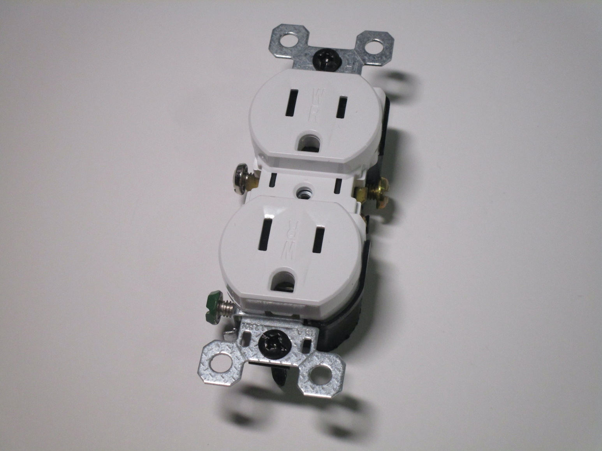 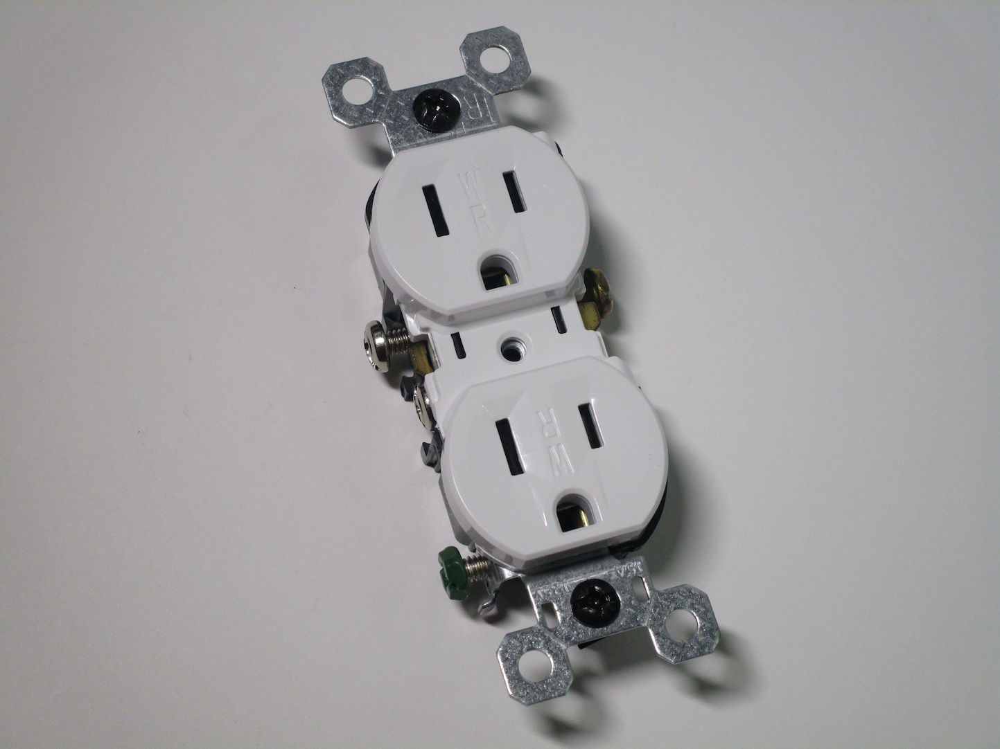 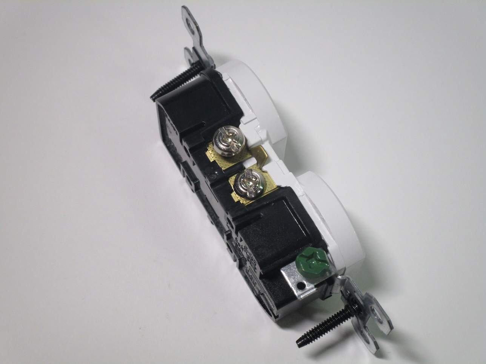{kind=link}
{kind=link}
{kind=link}
20A power outlet
Rating: 20A 125V
These outlets are used with 20A circuits and allow for connection of both standard 15A 120V plugs, but also 20A ones (NEMA 5-20P).
While 20A circuits have become more popular in American houses, 15A sockets are often still the type used (their use on 20A circuits is allowed), as 20A ones are more expensive and there are very few appliances that actually use 20A plugs.
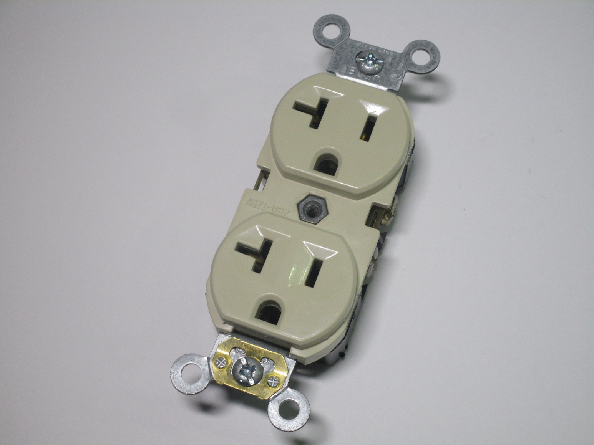 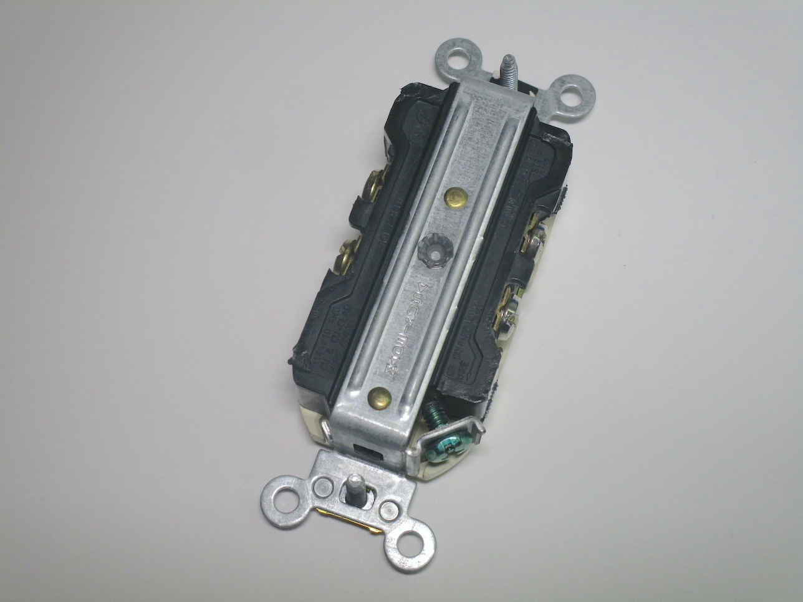{kind=link}
{kind=link}
Lightswitches
Standard American lightswitches
Rating: 15A 120V
This style of lightswitch - the most common type found in North America - is quite interesting as it's of a type very uncommon in Europe: they work similarly to toggleswitches used in hobby electronics, with a plastic post that sticks out a few millimetres from the cover plate and is moved up or down to turn the lights on or off.
The two examples I have here are, respectively, one meant for single-switch control, and another that can be used
with a multi-switch setup.
Notably, the second lightswitch supports the use of aluminium wire, while the first one does not.
Their construction and wiring is the same as with the outlets, with the same design flaws, although contrary to the
outlets the lightswitches use a different style of cover plate, with two mounting screws.
{kind=link}
{kind=link}
{kind=link}
Paddle-style switches
Rating: 15A 120/277V
More recently, paddle-style switches like this one have started becoming more popular. These use the large Decora style of faceplate and are generally easier to actuate because of their bigger surface area, which can be useful for accessiblity.
Notably, this lightswitch is rated for use not just on normal 120V circuits but also on 277V ones, for industrial applications on 480V three-phase supplies.
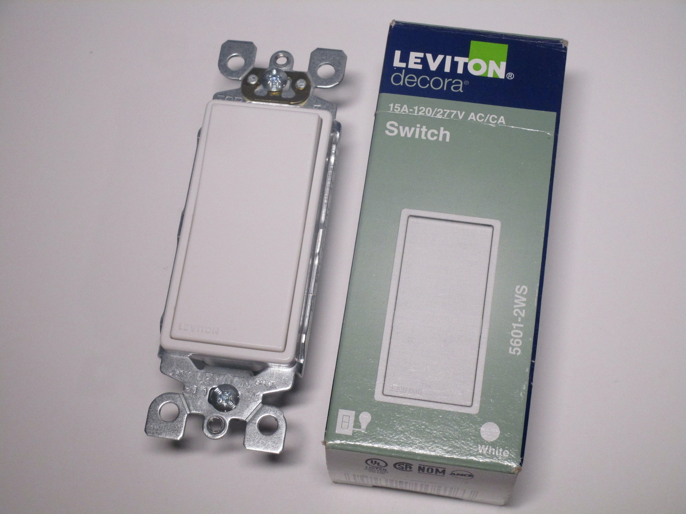 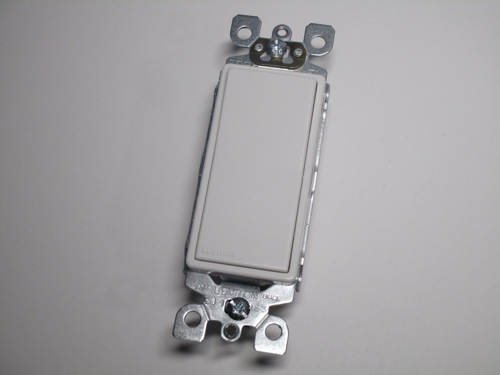 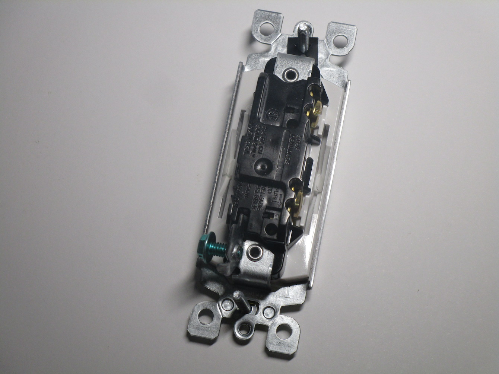{kind=link}
{kind=link}
{kind=link}
Wiring, fuses and breakers
Types of wire
Wiring in American houses differes quite a bit from how it's done here; almost all circuits are wired using solid core wire (which is also used in Europe, although not at all in Italy), which is particularly difficult to work with due to its rigidity, especially on higher amperage circuits.
The type of cable most commonly used for circuits is called Romex (although that's technically a trademark) - it's
a flat plastic cable with two or three insulated wires (plus the earth wire, which isn't insulated) housed inside,
which can easily be stapled to wooden beams.
The outer layer of plastic is coloured differently depending on the size of the wire inside - white for 14 AWG
and yellow for 12 AWG are the most common sizes.
Being flat, it is also fairly easy to write information on it like the name of the circuit.
{kind=link}
{kind=link}
Vintage Edison screw fuses
This is the style of fuse that was commonly in use in North America before breakers were popularised. These fuses use an Edison screw socket, the same used in lamp holders, and were generally made of glass (although newer ones use plastic with a window on the top) in order to see if the fuse was blown and also to read the label where its rating was shown.
The major flaw with these styles of fuses was that, since they all used an E26 socket, it was very easy to swap them with one of a higher rating, which is very dangerous and can potentially cause a fire. While other designs of cartridge fuse, like the Diazed fuses used in most of continental Europe, solved this problem by having different sizes of fuse, that wasn't possible with this style because of its design.


Later on a solution was created in the form of a different type of fuse, the S-style fuses, which made using the wrong fuse more difficult while still retaining compatibility with existing panels (thanks to a fixed section that screwed into the normal E26 socket and was meant to be hard to remove for a normal user). However, these weren't as common as the normal style of fuses and thus the problem persisted.
Double-pole breaker
Rating: 30A 240V
This is a double-pole breaker, as used with American 240V circuits (in this case a 30A one, which is often used for dryers). Double-pole breakers are simply two normal breakers that trip together, which is important on a 240V circuit to ensure that both phases have been disconnected. As with most US breakers, the neutral isn't switched and instead is connected to the neutral bar.
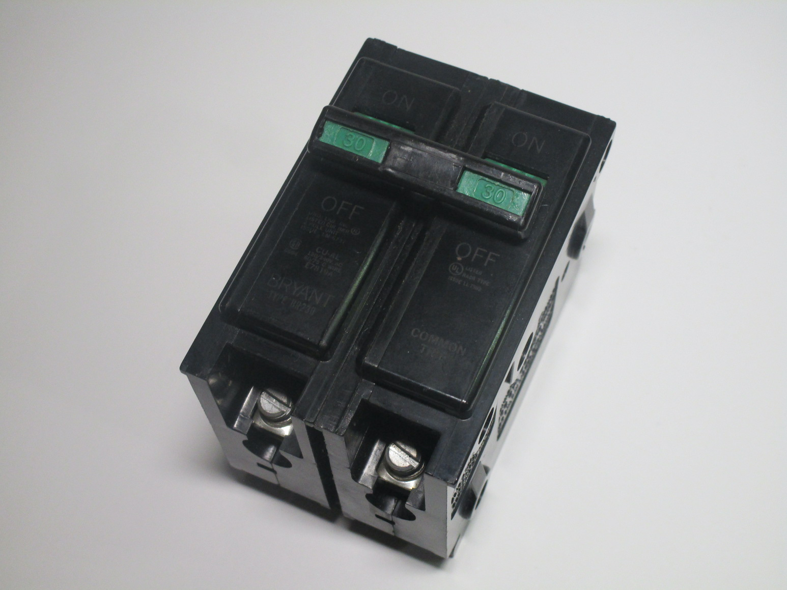 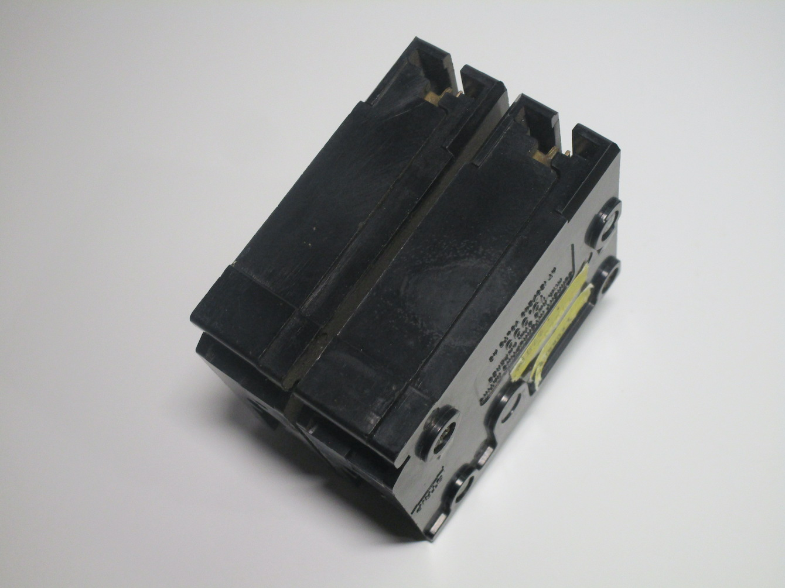{kind=link}
{kind=link}
Adaptors
Ground defeater adaptor
This adaptor converts a 2-pin outlet into a 3-pin one, with a tab meant to be used for the earth connection. In theory it's supposed to be used only with a socket that is 2-pin but has a grounded wall-box: the tab would connect to the screw holding the faceplate and thus would make it possible to connect devices which need an earth connection safely.
In practice however, it's just used to bypass the earth connection entirely in old houses that lack it. It's a very well known thing, with its intended purpose likely just being an excuse to keep selling these adaptors - if you really did have a house with a grounded box it'd make more sense to replace the socket instead of using one of these with the likely old and crusty original one.
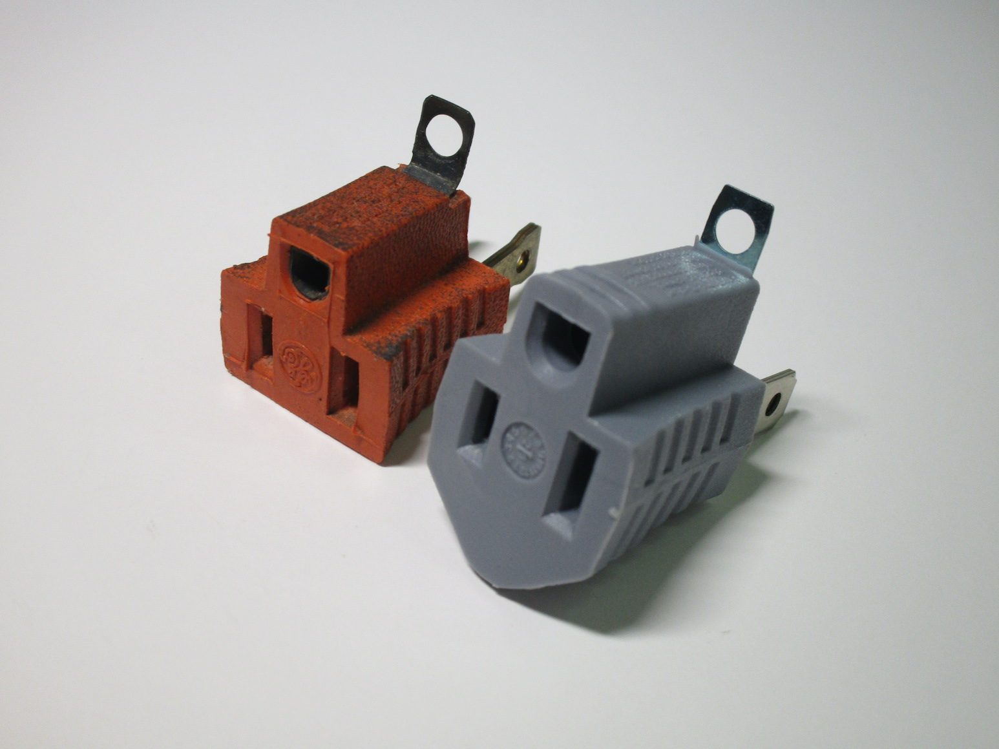{kind=link}

Lamp socket to power outlet adaptor
Rating: 660W 125V
This adaptor screws to a normal lamp socket and converts it to two 2-pin power outlets, allowing the user to plug in electrical devices in situations where they wouldn't otherwise be available. It also features a pass-through lamp socket to connect a lightbulb, with a pullcord to turn it on or off.
Adaptors like these (often called "current stealers" or "current taps") were used a lot in the early days of
electricity around the world, since, as at the time it was mainly used for lighting and appliances were fairly
uncommon, very few power sockets were generally present in a room.
However, these were only available in Europe until the 50s/60s, and their only use nowadays is as a collector's
piece as there is no practical reason to use one of these.
It was very surprising, then, when I found out that it still possible to buy brand new versions of these in
North America, and that they're still sometimes used for certain applications.
{kind=link}

Simpler versions of these are also available, which only contain one power outlet and no pass-through for lamps, which are much smaller and could be useful for temporary use.
Notably, both of these adaptors have a very limited rating (max 660W), understandably so since lamp sockets aren't generally designed to handle large amounts of current, although as there is no fuse or breaker to actually enforce this it's up to the user to be careful with their use.
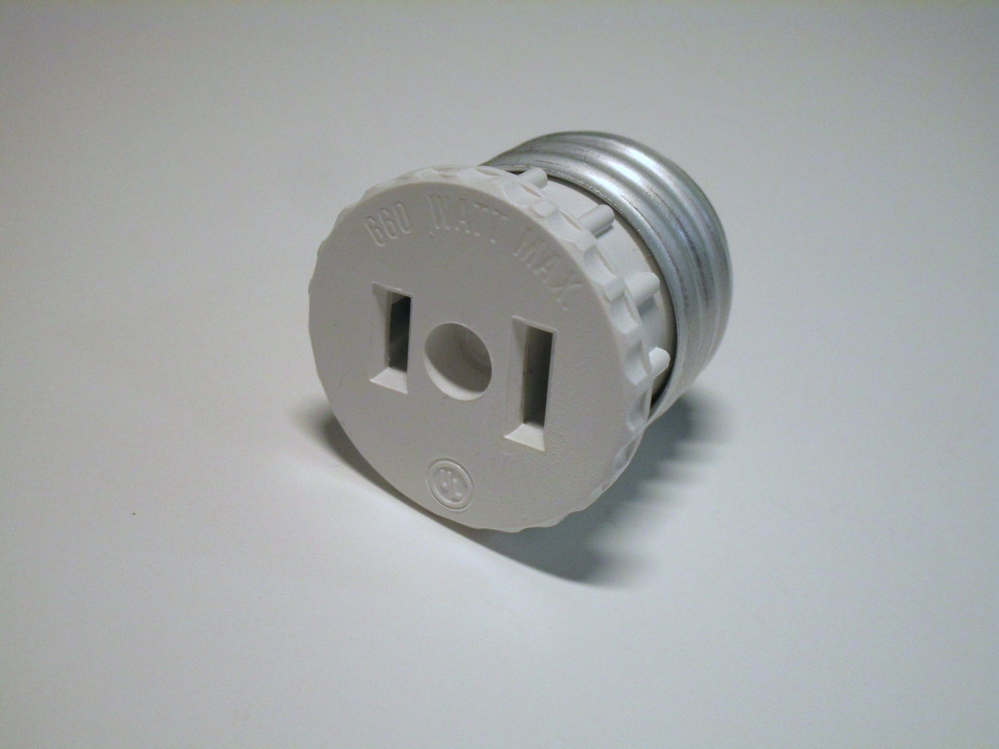 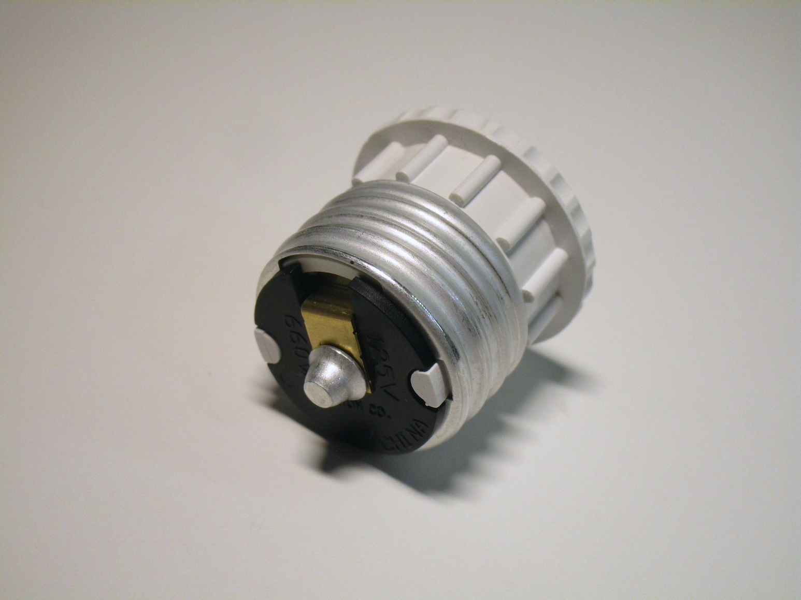{kind=link}
{kind=link}